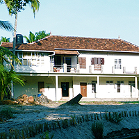
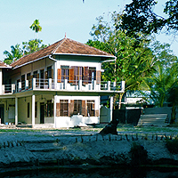
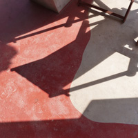

Home | Art Museum | Homestay | Photos | Latest | Contact
  
Invitation from Centre for Social & Political Art (CSPA). All are welcome! pic.twitter.com/jsyUueoVi9
— CSPA India (@cspa_india) July 29, 2014www.cspa.in, the official website of 'Centre for Social & Political Art' (CSPA) will be inaugurated by Shri Jaspal Singh IPS, former Minister from Gujarat and former and Mayor of Baroda on Saturday, August 9, 2014 at 12 noon at Ashirbhavan, Ernakulam, Kerala.
CSPA, the first collaborative project of Design & People and Sylviander House is a platform to promote collective involvement of every citizen to appreciate rights of all living beings. It enables the marginalised and victimised people to voice their grievances, build awareness and receive empowerment. The Centre rallies creative artists, thinkers and activists under its banner to work against all power structures. It upholds freedom of all arts and creativity. The Centre is a catalyst, inspiring all vulnerable communities to strive against the existing repressive Social & Political order.
CSPA.in, the website of the institution also be the virtual space for Friends of Tibet Library of Books & Films and Design & People Library of Books. CSPA website allows its members and visitors to choose books and films online without giving a visit to CSPA. Researchers and students from outside Kerala can make use of the 'Get a Book by Post' facility. CSPA at Alappuzha consists of two Libraries — 'Friends of Tibet Library of Books and Films' and 'Design & People Library of Books' — developed and maintained by Friends of Tibet and Design & People, two organisations associated with CSPA. The CSPA Library has an extensive collection of books on Art, Design, Society, Politics, Architecture, Human Rights, Photography, Tibet, China, History, Religion, Traditional Medical Systems etc. Library facilities are open to CSPA Associates, Members of CSPA Residency Programmes while memberships are available for individuals and organisations. CSPA will also have a permanent collection of original photograhs of renowned Indian and International Photographers. Some of them are including Angel Lopez Soto (Spain), Brian Harris (Canada), Diane Barker (UK), Jaqueline Meier (Switzerland), John Ackerly (USA), Giulia Francesca Johnson (USA), Lobsang Wangyal (Tibet), Kathryn Culley (USA), Manuela Metelli (Italy), Ken Damy (Italy), Nancy Jo Johnson (USA), Prabir Purkayastha (India), Prabuddha Dasgupta (India), Sonam Zoksang (USA), Suresh Natarajan (India), Vijay Kranti (India) and William Chapman (USA).
CSPA houses rare collections of art and artifacts from Tibet. The Museum section is being made possible with the generous support from Friends of Tibet, a Tibet Support Group and a Member Organisation with CSPA. The Centre also houses original and prints of political cartoons by renowned Indian cartoonists. All are welcome!
To know more, visit: http://www.cspa.in or call: +91.9995181777, +91.9645817014 Fax: +91.11.4761514 Email: life@cspa.in Web: www.cspa.in
SYLVIANDER HOUSE: AN ART VILLAGE AMID CANALS
MODERN ART IN A RUSTIC SETTING
Alappuzha: It's an unlikely venue for a modern art gallery. But Alexander Devasia's gallery, 'Sylviander House' somehow blends into the surroundings of Chettikad, a remote coastal village of Alappuzha. It could have something to do with the backdrop of his work, rain, which reflects the serenity of village life.
Having lived in Germany for 14 years, Alexander Devasia has moved to Kerala to set up its first village modern art gallery that will open to public on Friday. The idea, he says, is to raise awareness among the rural folk about the importance and influence of modern art in society and also draw tourists to Kerala's villages. Of the 59 paintings that he did while in Germany, 39 are based on the life of Vincent Van Gogh. His fascination with Van Gogh has been so deep that he did research on various stages of the renowned painter's state of mind during the last days of his life and has tried to give his own impression of it using rainfall as a metaphor.
"Rain comes from another world, reminding us of the relationship between nature and humans. A casual look reveals only water drops, but their content means pulsating energy. It has soul and life! I've done my best to give meaning to rain and my Van Goghian creations are the result of it," he says. Born in 1963 in Punnapra, Devasia worked as an artist with the Residence Theatre in Munich, and now lives with his writer-artist German wife, Sylvie Bantle in Chettikad. "I hope the gallery will encourage modern art and also unlock young talent in this part of the world," he adds.
An Artistic Journey Begins: Alexander Devasia's mother lights a lamp at Sylviander House Art Museum, Chettikad, Alappuzha, Kerala on December 21, 2012. The Art Museum is one of the firsts in the village which has the capacity to hold exhibitions, concerts, lectures and performances. (Photo: Design & People)
WATER, THE MIRROR OF THE WORLD
Exhilarating locale for art exhibition and permanent collections.
ALAPPUZHA, KERALA, INDIA
(By Sudheesh T, Deccan Chronicle, December 19, 2012)
(December 21, 2012 - March 21, 2013)
Serene abode for creative people to assemble and engage in dialogues and performances.
Event opening on Friday, December 21, 2012 with the show of paintings and installations by Alexander Devasia

DIRECTIONS TO SYLVIANDER HOUSE: PDF | MAPS
Tel: +91.9645817014 Email: Life@sylvianderhouse.com Web: www.sylvianderhouse.com